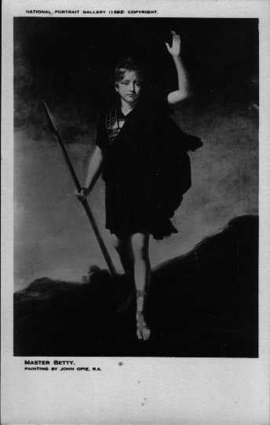

Monday, November the 8th, 2004
back to: title, date or indexes
Many, many women, and not a few men, have their stories of the time they smooched with Istvan. Their recollections have been anthologised in a new book, entitled Smooching With Istvan, in which they reminisce about their smooching. One of those whose memories are not included is alleged Kennedy assassin Lee Harvey Oswald, who is known to have smooched with Istvan in a Fort Worth, Texas nightclub early in 1963, soon after his return from the Soviet Union. His, there, refers to Oswald, not Istvan, although Istvan had himself visited the USSR (or, in Cyrillic, the CCCP) on many occasions, smooching with Olga, Natasha, Yuri, Boris and Svetlana, among others.
It has to be said that most of these tales are mundane, boring, even unreadable. From time to time, however, the diligent reader comes upon a nugget of splendour, such as this brief passage from an unnamed resident of the Land Adjunct To The Frightening Sea:
“Titlarks sang, German lieder singers gathered, petunias and hellebore were in bloom, and a new DVD of William Betty : The Young Roscius was at last available in the shops. I pootled off to the dancehall planning little more than an evening of glum pinch-mouthed misery. But Istvan was there! I smooched with him for two hours. His cravat was so, so dashing. Now as I sit in my beach hut peering intently at auks and terns through my binoculars, I think of that night, and my heart pounds with something which may well be excitement.”
Copies of Smooching With Istvan are not yet available, as they have been impounded by shadowy figures wearing tunics woven from thousands upon thousands of hairs plucked from pipistrelle bats.

William Betty as Young Roscius
Hooting Yard on the Air, November the 10th, 2004 : “Notes on Jellyfish” (starts around 23:57)